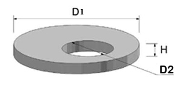

|
Назва виробу |
Розміри, мм |
Маса, кг |
||
|
D1 |
D2 |
H |
||
|
КС 10-9 |
1000 |
1160 |
890 |
600 |
|
КС 15-9 |
1500 |
1680 |
890 |
1000 |
|
КС 20-9 |
2000 |
2200 |
890 |
1480 |
D1- внутрішній діаметр;
D2- зовнішній діаметр;
Н- висота

|
Назва виробу |
Розміри, мм |
Маса, кг |
||
|
D1 |
D2 |
H |
||
|
ПП10-1 |
1160 |
700 |
150 |
250 |
|
1ПП15-1 |
1680 |
700 |
150 |
680 |
D1- діаметр плити;
D2- діаметр отвору плити;
Н- товщина

|
Назва виробу |
Розміри, мм |
Маса, кг |
|
|
D1 |
H |
||
|
ПН10 |
1500 |
100 |
500 |
|
ПН15 |
2000 |
120 |
1000 |
D1- діаметр дна колодязя;
Н- товщина
Купити кільця каналізаційні - таку пропозицію можна почути сьогодні від безлічі компаній, присутніх на будівельному ринку. Діяльність нашої компанії в будівельній сфері дозволяє заявити, що у нас можна придбати залізобетонні вироби, керамзитобетон, а також бетонні кільця колодязні, ціна яких знаходиться в оптимальному співвідношенню з якістю. Каталог нашої продукції включає супутні вироби, без яких не можуть повноцінно використовуватися ЗБВ кільця: кришки для колодязів і днища колодязів.
Бетонні колодязні кільця, ціни яких залежать від діаметра, використовуються при монтажі різних видів колодязів:
Часто ЗБ кільця застосовуються при ремонті тепломереж. Отже, тип днища, кільця і ??кришки колодязів визначається їх призначенням. Слід врахувати, що залізобетонні кільця, ціна яких залежить ще й від того, бетон якої марки використовувався в процесі їх виготовлення, є стовбуром і горловиною колодязя, а кришка і днище колодязів сприяють зміцненню конструкції. Враховуючи те, що конструкція повинна бути міцною та надійною, головним критерієм вибору має бути висока якість її виготовлення.
Сьогодні бетонні вироби випускає безліч підприємців, що мають різну репутацію. Акцентуючи увагу на те, що кільце залізобетонне (ЖБ) експлуатується в несприятливих умовах, другим критерієм вибору має бути - заводське виготовлення. З часом бетонні кільця колодязні, ціни в Києві на які нижче ринкових, можуть тріскати або кришитися. Це викликано невідповідністю сировини, яка не витримує впливів наступних факторів:
На залізобетонні кільця для колодязів ціни можуть знижуватися у недобросовісних виробників за рахунок зниження якості бетону та арматури.
Купуючи каналізаційні кільця які виготовив завод залізобетонних виробів, ви забезпечите собі гарантію придбання якісної продукції. Наявність широкого асортименту типів і розмірів дозволяє вибрати оптимальні ЗБВ і супроводжуючі вироби:
Переваги, які мають наші бетонні кільця для каналізації, обумовлені наступними чинниками:
Критерієм вибору може стати особисте ставлення до будівництва. Якщо ви ставитеся до нього з повною відповідальністю, то, напевно, оберете кільця каналізаційні кращої якості і приймете рішення купити кришки колодязів заводського виготовлення, а також купити днища колодязів, що забезпечують міцність конструкції.
Бетонні кільця каналізаційні, що володіють високою якістю, проявляють такі властивості:
Купити днища колодязів сьогодні можна з орієнтацією на їх високу якість і доступну ціну. Купити кришки колодязів та інші вироби можна з гарантією їх доставки на об'єкт. Також ми можемо запропонувати реалізацію і перевезення бетона, керамзитобетону і багатьох інших, необхідних в будівництві матеріалів.
Ціна на бетонні кільця для каналізації залежить від габаритів конструкції, діаметра арматури і марки сполучної речовини. Тому сьогодні можна купити кришки колодязів і днища високої якості в широких цінових межах.